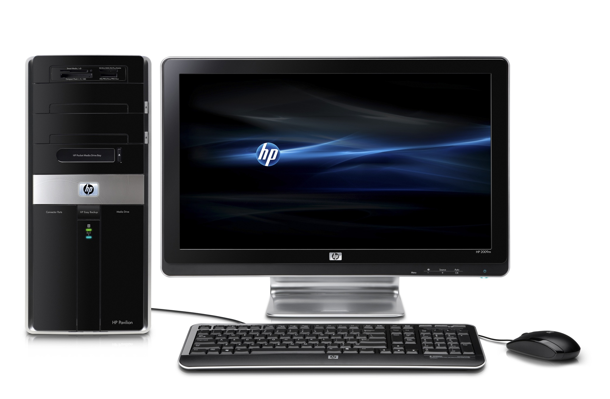

Los PCs de escritorio aún ofrecen muchas ventajas frente a los portátiles. Los hay de gran formato (torre), compactos (Mini PC) o con sus componentes integrados tras la pantalla (AiO o Todo en Uno)
Tradicionalmente un PC de escritorio se asocia con un ordenador de gran tamaño, ruidoso y que emite mucho calor. Eso es cosa del pasado. Los PCs actuales tienen un consumo moderado y diferentes modos de funcionamiento que reducen la velocidad del procesador y la GPU cuando se realizan tareas ligeras como navegar por Internet o redactar un texto.
Nada puede igualar su rendimiento y la comodidad que proporciona un monitor grande y un teclado de tamaño completo. Siguen siendo imprescindibles cuando tienes que usar un ordenador varias horas seguidas.
pc de marca planca: El PC de escritorio de toda la vida que montas tú mismo o te montan en una tienda con los componentes que elijas. Es el que mejor relación potencia / precio ofrece, y lo puedes personalizar al máximo. Además se puede ampliar fácilmente.
Pc de marca: Son más caros, la personalización está limitada, y las reparaciones fuera de garantía suelen ser caras. A cambio tienen componentes muy equilibrados, ofrecen muy buen rendimiento y tienen la garantía y el servicio técnico del fabricante.
PC gamer: Ordenador pensado para jugar a videojuegos. Se distingue por sus carcasas negras con colores llamativos. Suelen ser muy potentes pero también consumen más, y son caros.
Mini PC: Ordenador pensado para jugar a videojuegos. Se distingue por sus carcasas negras con colores llamativos. Suelen ser muy potentes pero también consumen más, y son caros.
Todo-En-Uno: El hardware del ordenador se coloca detrás del monitor, dando la sensación de que sólo tienes una pantalla. Básicamente es un miniPC incrustado en la pantalla, así que el rendimiento es suficiente para tareas básicas pero no puede con trabajos que exigen una gran potencia de proceso.
La primera decisión al comprar un PC de sobremesa, es si lo montas tu mismo o pides que te lo monten. Hoy en día ensamblar un PC no es muy complicado. La mayoría de los componentes son modulares y es tan sencillo como encajarlos en sus slots y conectar los cables. Las BIOS modernas reconocen automáticamente el hardware y configuran ellas mismas el voltaje y la velocidad. Aún así es una operación delicada, porque si lo haces mal puedes estropear el hardware
Montarlo tu mismo es la mejor opción, porque es la más barata. Sólo tienes que pedir el hardware en la tienda. Un PC básico necesita lo siguiente:
Un ordenador es una máquina formada por diferentes componentes que funcionan en armonía. Deben ser compatibles entre sí para que no se produzcan errores, lo que significa que elegir una determinada componente influye en el resto. De mayor a menor importancia, este es el orden de elección del hardware de un ordenador:
Nuestro primer consejo para comprar un PC de escritorio es comenzar con tres elementos clave: el procesador, la tarjeta gráfica y la memoria. Esto nos define la placa base que debemos poner, y la fuente de alimentación. Con esto ya tenemos un PC básico y a partir de aquí podemos añadir lo que queramos.
Los ordenadores más básicos incluyen el chip gráfico integrado dentro del propio procesador (Intel HD Graphics), pero sólo ofrece un rendimiento básico para tareas cotidianas. Para jugar a juegos o trabajar con multimedia se requiere una tarjeta dedicada. Aunque sólo hay dos grandes fabricantes NVIDIA y AMD, existen docenas de chips diferentes, que además montan muchos ensambladores (marcas distintas). Por ejemplo hay muchas tarjetas que usan el chip GTX 1070 de NVIDIA de las marcas MSI, Gigabyte, Zotac, etc., y cada una añade pequeñas variaciones en la velocidad, sistema de refrigeración, etc.
La memoria RAM del ordenador nos va a permitir realizar labores multitarea y manejar gran cantidad de datos de forma eficiente. Windows 10 exige menos RAM que sus predecesores, y por otro lado es una de las componentes más sencillas de instalar. Su precio no es muy elevado, así que nuestro consejo es que pongas una cantidad mínima de memoria RAM, 4 GB (ofimática) u 8 GB (gaming), y luego ya tendrás tiempo de ampliar cuando notes que el ordenador o algún programa lo necesita. Existen diferentes tipos de memoria RAM: DDR2, DDR3, DDR4, etc. Como más alto sea el número, más rendimiento. Además dentro de cada gama, hay distintas velocidades. Consejos para comprar un ordenador de sobremesa El tipo y la velocidad dependen del procesador y la placa base. Acude a las especificaciones del procesador y mira la velocidad máxima del bus de datos de memoria que admite. Acude a las especificaciones de la placa base que hayas elegido y mira el tipo de memoria que soporta (DDR3 o DDR4). Así sabrás qué tipo de memoria tienes que comprar. Otro dato importante es que las memorias actuales rinden mejor en parejas. Si vas a poner 8 GB es mejor poner 2 módulos de 4 GB en lugar de 1 de 8 GB. A la hora de comprar la placa base comprueba que tiene slots de memoria libres para una futura ampliación. También hay que considerar la latencia (CL). Como más baja sea, mejor. Por ejemplo una memoria con latencia CL8 es más eficiente que otra con CL9 o CL10 (y seguramente más cara). Verás que algunas memorias son ECC. Significa que incluyen un control adicional de errores, pero son más caras y es necesario que la placa base sea compatible con él. Las memorias sin este control se llaman Non-ECC.
Durante décadas los discos duros han sido el principal medio de almacenamiento, pero ya están siendo sustituido por los SSD (Solid State Drive) o discos sólidos/rígidos. Son algo más caros y tienen una menor capacidad de almacenamiento pero no tienen partes mecánicas así que no hacen ruido, se calientan menos y son mucho más rápidos. En este vídeo puedes ver cómo funcionan: Hoy en día es imprescindible montar un disco SSD para instalar el sistema operativo. El ordenador arrancará y funcionará mucho más rápido. Puedes comprar un disco SSD de 256 GB por apenas 75€. Los programas y los datos se pueden guardar en un disco duro convencional.
La elección de la placa base (o placa madre) depende directamente del procesador y la tarjeta gráfica. Debes tener en cuenta varias cosas:
El sistema de refrigeración y disipación del calor es vital para que el ordenador pueda rendir al máximo nivel. Los procesadores y tarjetas gráficas actuales están preparados para reducir la velocidad automáticamente si la temperatura interna alcanza cierto nivel, así que debes asegurarte de que el calor se disipa correctamente, sino tu PC funcionará más lento. En la mayoría de los casos el enfriamiento lo llevan a cabo los disipadores (grandes placas de metal encima del procesador o el chip gráfico) y los ventiladores. El procesador suele incluir su propio disipador, pero es muy básico, así que es mejor sustituirlo por un disipador más potente: Consejos para comprar un ordenador de sobremesa Asegúrate de que es compatible con tu procesador. Los ventiladores los suele incluir la propia torre, pero seguramente serán algo ruidosos. Puedes sustituirlos por ventiladores de PC más silenciosos, o añadir más si los necesitas. Aquí tienes algunos consejos para elegir ventiladores de PC. El último elemento clave, y uno de los más importantes, es la fuente de alimentación. Debe suministrar energía a todo el hardware, de forma holgada. El 60 o 70% de todo el consumo lo realizan el procesador, la tarjeta gráfica, y los discos duros. Así que acude a las especificaciones, suma el consumo de estas tres componentes, medido en Vatios (W), añadele un 40% de ese valor para garantizar un suministro holgado, y tendrás la fuente que necesitas. Por ejemplo, si el procesador consume un máximo de 100W, la placa gráfica 170W, el disco duro y SSD 50W, eso son 320W. El 40% es 128W así que 320 + 128 = 448W. La fuente de alimentación debe rondar los 500W. Hay muchas medidas diferentes: 500, 550, 700, 850W, etc. Ten en cuenta también el tamaño, que se ajuste a la placa: ATX, microATX, etc. Otra opción es acudir a la web OuterVision que ofrece un calculador de consumo. Introduces el hardware de tu PC (procesador, placa, discos, memoria, etc), y te calcula la fuente óptima que necesitas. Además de la potencia también tienes que tener en cuenta otros aspectos como el amperaje o la certificación. Están explicados en este artículo con más consejos para elegir una fuente de alimentación.
Es una época complicada para comprar un monitor. Acaban de estrenarse tecnologías como HDMI 2.1 o 4K HDR y aún no están muy extendidas, pero son el futuro. Consejos para comprar un ordenador de sobremesa
Aspectos a tener en cuenta:
Tamaño: Compra el máximo tamaño que puedas permitirte, en relación a la distancia de visionado
Tecnología del panel: Los paneles TN son los más comunes. Son muy usados por su bajo tiempo de respuesta y su bajo precio, pero su ángulo de visión es limitado. Los paneles IPS ofrecen más ángulo de visión y colores más reales, pero los negros se ven más lavados. Ya se han anunciado monitores OLED, más caros pero con unos colores y negros más perfectos.
Resolución: Para un trabajo de ofimática o educativo, basta con un monitor 1080p. Si tienes un PC gaming te interesa un monitor WQHD (1440p), e incluso 4K.
Tiempo de respuesta: la latencia desde que das una orden que cambia la imagen, hasta que se refleja en pantalla. Como más bajo sea este valor, mejor.
¿Qué es eso del HDR? HDR es una técnica de imagen que consigue colores más naturales, blancos más blancos, negros más negros, así como más variación de los mismos. Se usa en el cine (Netflix o el formato Blu-ray 4K Ultra HD ya lo emplean) pero también ha llegado a los videojuegos en las consolas PS4 Pro y Xbox One S. Y tanto NVIDIA como AMD ya lo aceptan en sus tarjetas gráficas. Si vas a comprar un monitor 4K, que sea HDR, porque en los próximos meses los juegos lo usarán para mejorar la calidad de imagen.
Velocidad de refresco: el mínimo indispensable hoy en día es 120 Hz para trabajar y 60 Hz para jugar. Pero hay monitores que ofrecen hasta 244 Hz. Como mayor sea, más descanso para la vista
G-Sync o FreeSync: Algunos monitores pensados para gaming pueden usar una tasa de refresco variable que se ajusta a la velocidad del juego, en tiempo real. De esta forma la imagen siempre se ve suave, sin tirones, aunque los fps varíen. NVIDIA llama a esta técnica G-sync y AMD, FreeSync, y no son compatibles. Según la tarjeta gráfica que tengas el monitor debe ser compatible con una u otra. Ya se ha anunciado G-Sync HDR.
Conexiones: El monitor debe tener al menos un par de conectores HDMI, DVI, y opcionalmente, DisplayPort. Asegúrate de que la tarjeta gráfica también tiene una de ellas.
¿Curvo o plano? Las pantallas curvas no han terminado de cuajar. No aportan ventajas pese a lo que publicitan, pero a mucha gente les gusta el efecto que producen, así que puedes comprarlas si te atraen.
La elección de la torre va mucho más allá de un simple tema estético o de tamaño. Los materiales y la longitud de la carcasa influyen en la disipación del calor o en el tipo de tarjetas que puedes instalar. Consejos para comprar un ordenador de sobremesa Si vas a comprar un ordenador para gaming o para exigentes tareas multimedia (edición de vídeo, entorno CAD, etc.) necesitas un procesador y un tarjeta gráfica potentes, que van a generar calor, así que es recomendable una torre de materiales metálicos como el aluminio y otras aleaciones, que enfrían más. Del mismo modo, la torre debe ser de tamaño completo (nada de versiones compactas o mini) porque las tarjetas gráficas más potentes son muy largas. Existen también carcasas con sistemas de refrigeración avanzados (agua, más ventiladores, etc). Si el PC se va a usar para labores de oficina o educativas, se pueden utilizar torres más pequeñas o de plástico. El tamaño dependerá del tipo de placa que vayas a montar: ATX, microATX o miniATX.